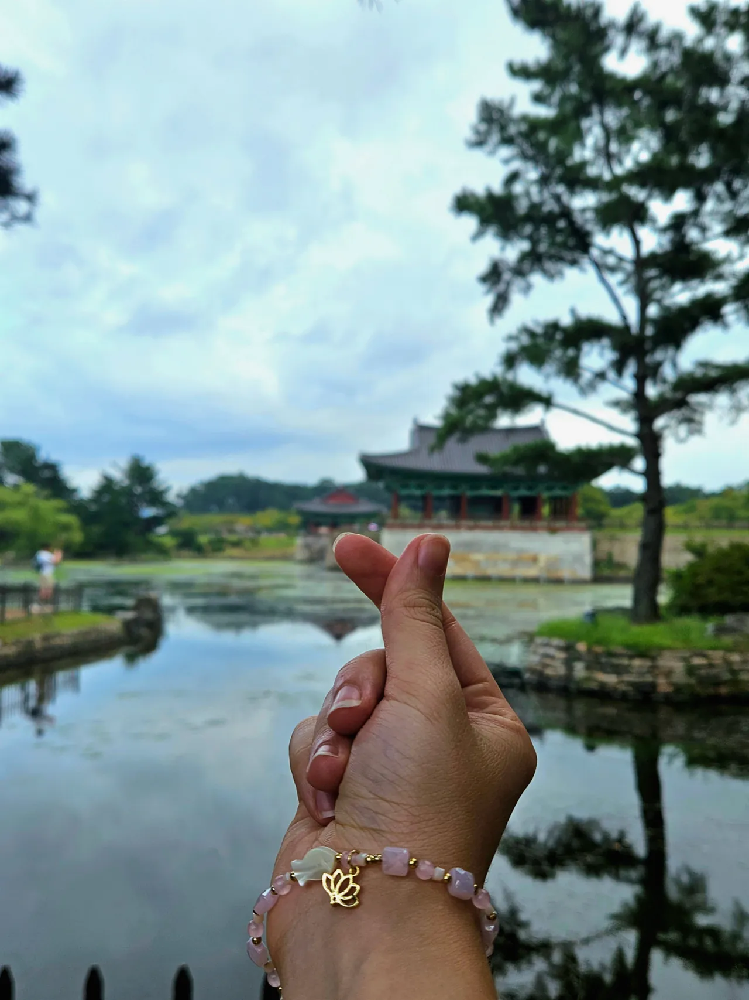
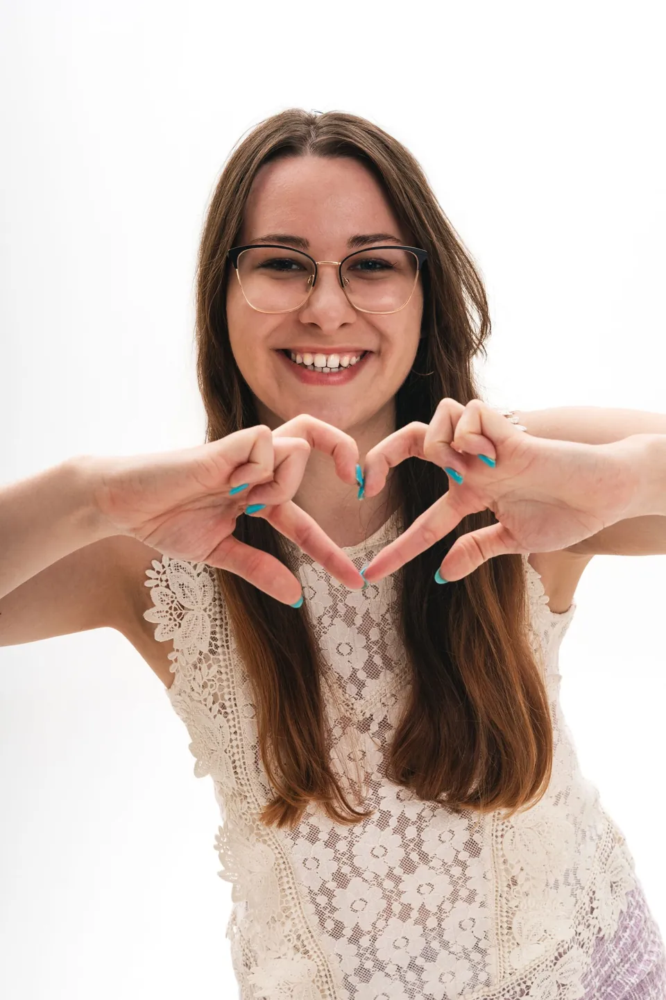

안녕하세요?
Nauka koreańskiego online - po prostu, po polsku
Nie komplikujmy tego, co można powiedzieć po prostu… po koreańsku. Uczę od podstaw hangulu po egzamin TOPIK.
Jagoda - koreanistka (Uniwersytet Warszawski), certyfikat TOPIK 5
Od pierwszej litery do swobodnej rozmowy
Zaczynasz od zera albo wracasz po przerwie? Wybierz poziom, na którym jesteś. Każdy ma swoje materiały i zajęcia dopasowane do celu: podróż, praca, studia, serial bez napisów.
Pierwsze kroki
Hangul, wymowa i pierwsze zdania. Przedstawisz się, zamówisz jedzenie i zapytasz o drogę.
Zacznij od podstaw B1-B2Rozmowa na co dzień
Gramatyka, która wreszcie się układa, rozmowy o codzienności i coraz więcej rozumienia ze słuchu.
Mów swobodniej C1-C2Poziom zaawansowany
Język formalny i akademicki, poziomy grzeczności, teksty prasowe i literackie.
Szlifuj język TOPIKEgzamin certyfikujący
Jak wygląda TOPIK I i II, jak rozplanować naukę i na co uważać w części pisemnej.
Przygotuj się do egzaminuNie wiesz, który poziom wybrać?
Zrób krótki test poziomujący. Po wyniku od razu wiesz, od czego zacząć zajęcia.
Cały alfabet zaczyna się od trzech kresek
Samogłoski hangulu zbudowano z trzech prostych znaków: kropki, która oznacza niebo, poziomej kreski - ziemię i pionowej - człowieka. Łącząc je, dostajesz kolejne litery.
Tak samo prowadzę zajęcia: od małych, zrozumiałych elementów do całych zdań. Bez komplikowania i bez wkuwania tabel na pamięć, za to z wyjaśnieniem po polsku, dlaczego coś działa tak, a nie inaczej.
Daj sobie zrozumieć.
razem tworzą

안녕하세요? Cześć!
Jestem Jagoda i od 5 lat uczę koreańskiego
Uczę prywatnie, w szkole językowej Kierunek Wschód i na Uniwersytecie SWPS. Przede wszystkim jestem pasjonatką języka i kultury koreańskiej - największą radość daje mi uczenie i poznawanie nowych kultur.
Różnice kulturowe i problemy społeczne to coś, co nie pozwala mi oderwać się od komputera, dopóki nie zrozumiem, skąd się biorą i jak możemy się lepiej rozumieć. Tego samego szukam na zajęciach: żeby język nie był zbiorem reguł, tylko sposobem na porozumienie.
Doświadczenie
- Szkoła językowa Kierunek Wschód - od 2022 roku
- Język koreański na Uniwersytecie SWPS
- Kultura, język i językoznawstwo dla II i III roku koreanistyki, Wyższa Uczelnia w Wołominie
- Zajęcia prywatne - od 2023 roku
Wykształcenie
- Uniwersytet Warszawski, Orientalistyka - Koreanistyka, studia licencjackie
- Uniwersytet Warszawski, Orientalistyka - Koreanistyka, studia magisterskie
- Uniwersytet Hanyang w Seulu - ukończony najwyższy poziom kursu (6, zaawansowany wyższy)
- Certyfikat TOPIK, poziom 5
Korea z bliska
Materiały do nauki
Wskazówki, jak się uczyć, transkrypcja i sprawdzone materiały. Krótkie lekcje i ciekawostki wrzucam też na YouTube, Instagram i TikTok.
- Jak się uczyć?Od czego zacząć, jak powtarzać i jak nie zgubić motywacji po pierwszym miesiącu.
- TranskrypcjaJak czytać i zapisywać koreańskie słowa polskimi literami.
- Polecane materiałyPodręczniki, aplikacje i kanały, z których warto korzystać.
- Najczęściej zadawane pytaniaIle trwa nauka, jak wyglądają zajęcia online, jak się zapisać.
- AktualnościNowe terminy, materiały i ogłoszenia.
Nie wiesz, od czego zacząć? Napisz do mnie
Napisz, na jakim jesteś poziomie i czego potrzebujesz. Odpowiem z propozycją terminu zajęć online.
info@koreanskipoprostu.pl